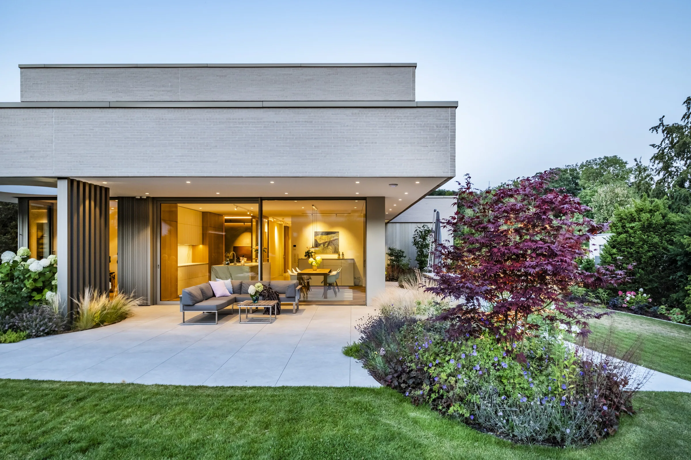
Mit der Umgebung im Dialog
Ein helles Haus mit natürlichen Materialien und sehr viel Glas. Innen und außen sollen fast verschmelzen.
Haus und Garten
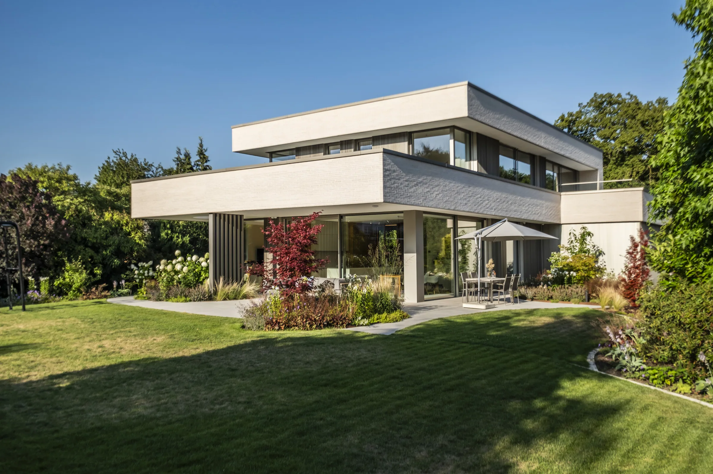
01 / 05Wo ein Haus aus den 1960er-Jahren stand, liegen jetzt klare, gestaffelte Baukörper auf rund 1.700 m² Grund.
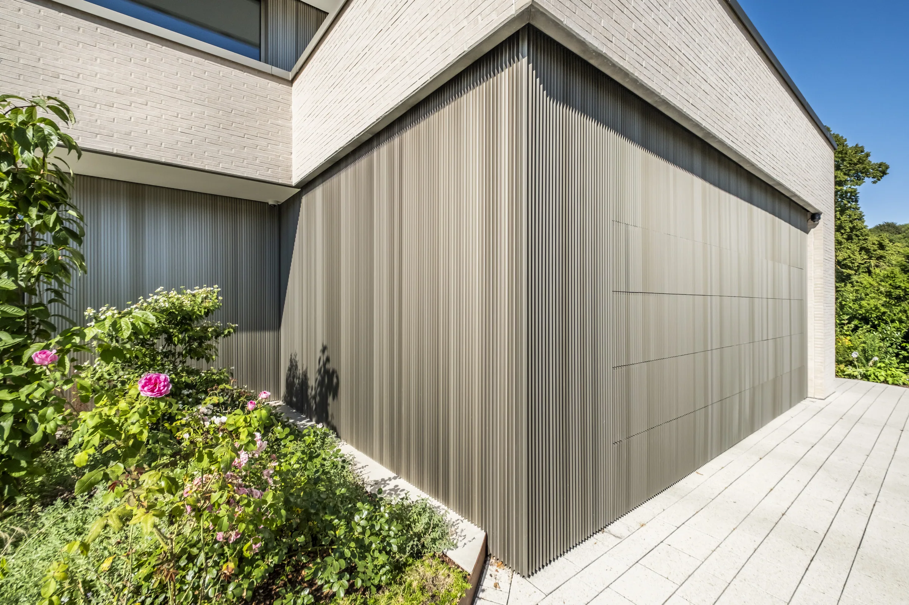
02 / 05Naturfarbene Ziegel, in gleicher Farbe verfugt. Dazu Fenster und Lamellen aus eloxiertem Aluminium.
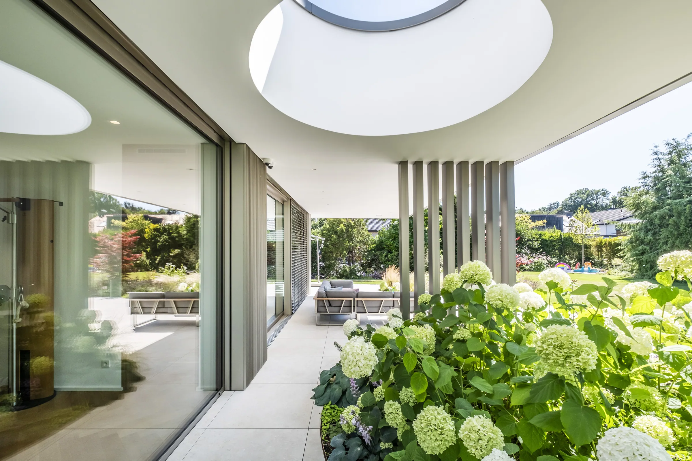
03 / 05Ein rundes Oberlicht in der großen, auskragenden Decke holt den Himmel auf die Terrasse.
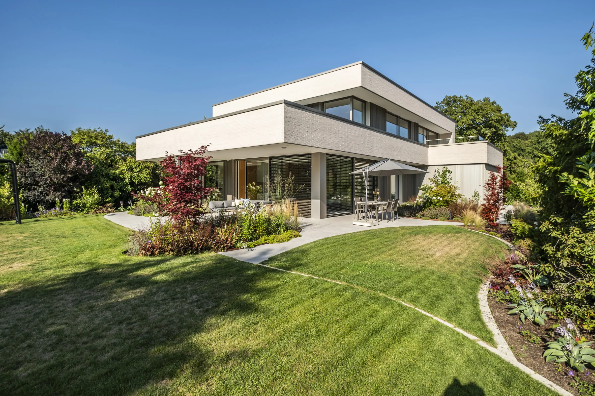
04 / 05Der Garten antwortet der geraden Architektur mit organischen Formen: geschwungene Beete, Gehölze, Stauden, alter Baumbestand.
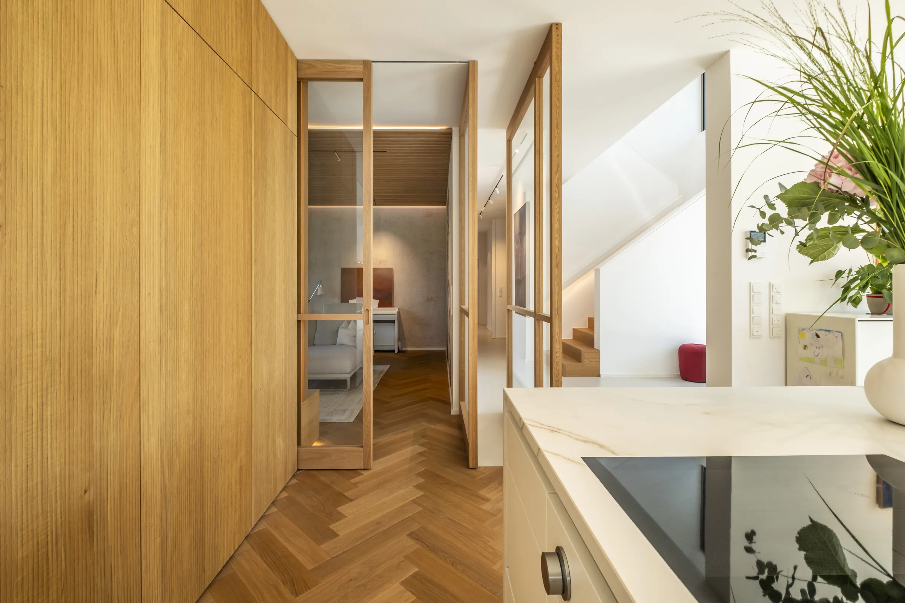
05 / 05Innen: Eichenparkett im Fischgrätverbund, Türen aus Holz und Glas, die offene Küche als Herzstück.
Der Gedanke
Wenn Architektur und Natur Partner werden.
Die junge Familie wünschte sich ein helles Haus mit vielen natürlichen Materialien. Geplant und umgesetzt hat es Engelshove Bau, gesteuert wird es über ein Smarthome-System.
„Es geht bei unseren Entwürfen nicht ausschließlich um die Ästhetik.“Anja Engelshove im Cube Magazin
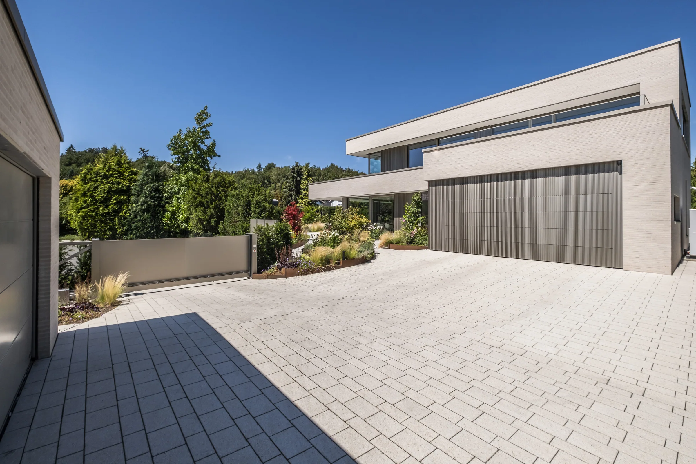
Innen und außen
Fast ohne Grenze.
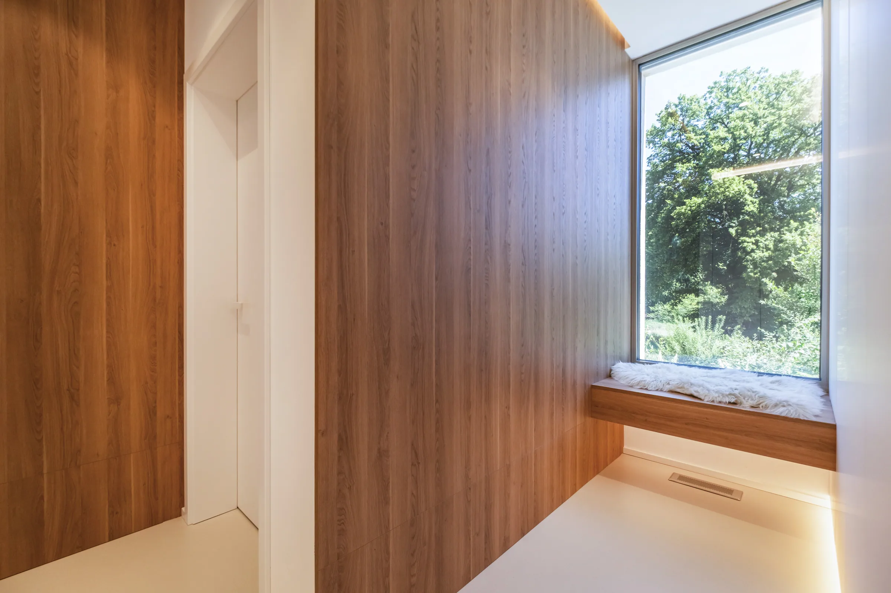
FlurHolzverkleidung und ein Sitzfenster ins Grüne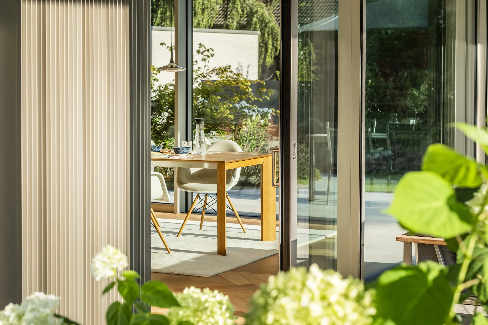
EssenDer Essplatz liegt direkt an der Glasfront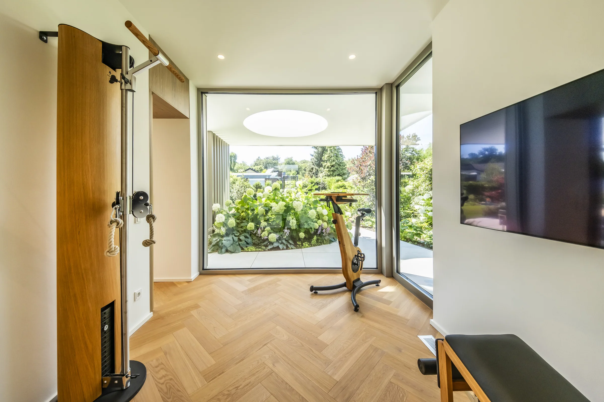
BewegungEckverglasung zum Garten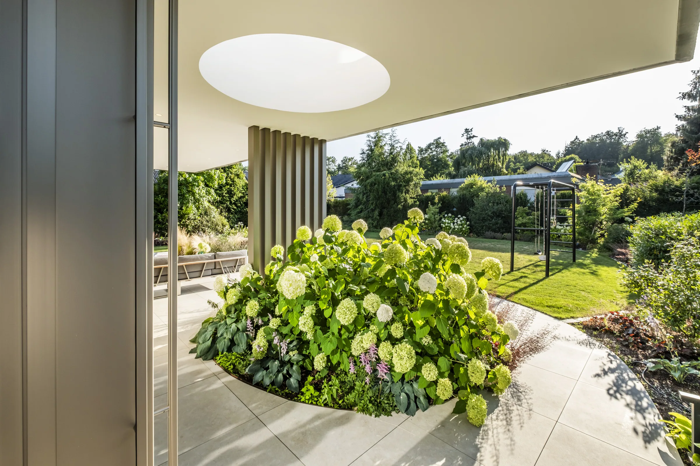
TerrasseUnter dem Oberlicht wächst ein Hortensienbeet
Fotos
Etwas Ähnliches vor?
Bericht: Mit der Umgebung im Dialog, Cube Düsseldorf 04|26, Seite 6 bis 10. Fotos: Arnt Haug.